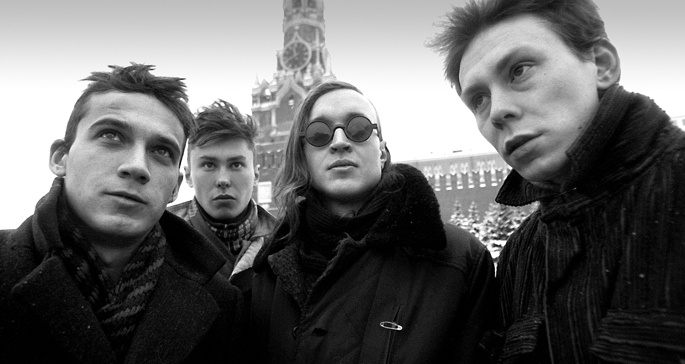

Cоветский и российский поэт, музыкант, а также звукорежиссёр, художник-оформитель и коллажист; основатель, лидер и единственный постоянный участник группы «Гражданская оборона»Б.
Надо радоваться, как мне кажется.
Надо радоваться солнцу.
Надо радоваться тому, что живой, солнечный.
То, что у тебя солнышко в сердце. Для меня это самое главное.
@Егор Летов
Егора Летова не стало в 2008 году. Но он жив, как Виктор Цой.
Его песни до сих пор продолжают звучать в современных фильмах: «Живой» Велединского, «Антикиллер» Кончаловского,«Как Витька Чеснок вез Леху Штыря в дом инвалидов» Ханта и так далее. Его именем всерьез собирались назвать аэропорт в Омске. Увы, не вышло, голосование подвело, зато владелец частного аэродрома в Омской области присвоил взлетной полосе имя Егора.
Русский панк явил именно Егор Летов. Чрезвычайно юродивый и внемейнстримный музыкант, отрицавший успех, амбиции и прочую тленную ересь (звал это все словом «гамазня»), он занимался жизнетворчеством, создавал собственный смысл бытия и язык — и только в этом видел соль. Его панк, или как многие считают панк-рок, был живейшим примером неофольклора революционного толка. Он выламывал скорлупу инерции изнутри, точнее из нутра, из глубины сибирских руд.
Благодаря уникальному стилю и звериной энергии Летов стал могучим народным героем, будто Стенька Разин или Ермак. При этом никаких красочных шоу или перфомансов никогда не давал. Дядечка в толстых очках и с засаленными волосами просто садился на стул и, не поднимаясь, два часа играл на акустической гитаре, глядя вниз в одну точку. Энергия, что исходила от этого омского крестьянина панка, раздвигала рамки допустимого.
Летов генерировал смыслы, новояз, оригинальную эстетику, смешивая в кучу антитезы, аллюзии и религиозные постулаты, перекидывая мостик в настоящее от Борхеса, Леонида Андреева, футуристов и Сартра. Так человек без образования стал социокультурным феноменом. Он выворачивал наизнанку пошлость и стереотипы.
ИНТЕРЕСНЫЕ ФАКТЫ ИЗ ЖИЗНИ ЛЕТОВА
•Настоящее имя Летова – Игорь.
•В 1985 отправлен на принудительное лечение в психиатрическую больницу.
•В 1993 поддерживая идеологию Национал-большевистской партии.
Прослушать песни Гражданской обороны можно по ссылкам:
Яндекс МузыкаCтудийные альбомы:
| 1 | 1985 | Поганая молодёжь |
| 2 | 1985 | Оптимизм |
| 3 | 1986 | Игра в бисер перед свиньями |
| 4 | 1987 | Мышеловка |
| 5 | 1987 | Хорошо!! |
| 6 | 1987 | Тоталитаризм |
| 7 | 1987 | Некрофилия |
| 8 | 1987 | Красный альбом | 9 | 1988 | Всё идёт по плану |
| 10 | 1988 | Так закалялась сталь |
| 11 | 1988 | Боевой стимул |
| 12 | 1989 | Тощнота |
| 13 | 1989 | Песни радости и счастья |
| 14 | 1989 | Посев |
| 15 | 1989 | Война |
| 16 | 1989 | Здорово и вечно |
| 17 | 1989 | Армагеддон-попс | 18 | 1990 | Инструкция по выживанию |
| 19 | 1997 | Солнцеворот |
| 20 | 1997 | Боевой стимул |
| 21 | 2002 | 2002 — Звездопад |
| 22 | 2004 | Долгая счастливая жизнь |
| 23 | 2005 | Реанимация |
| 25 | 2007 | Зачем снятся сны? |